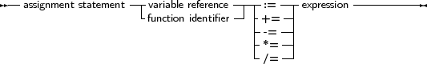

Assignments give a value to a variable, replacing any previous value the variable might have had:
_________________________________________________________________________________________________________Assignments

___________________________________________________________________
In addition to the standard Pascal assignment operator ( := ), which simply replaces the value of the varable with the value resulting from the expression on the right of the := operator, Free Pascal supports some C-style constructions. All available constructs are listed in table (10.1).
|
For these constructs to work, the -Sc command-line switch must be specified.
Remark: These constructions are just for typing convenience, they don’t generate different code. Here are some examples of valid assignment statements:
X := X+Y;
X+=Y; { Same as X := X+Y, needs -Sc command line switch} X/=2; { Same as X := X/2, needs -Sc command line switch} Done := False; Weather := Good; MyPi := 4* Tan(1); |
Keeping in mind that the dereferencing of a typed pointer results in a variable of the type the pointer points to, the following are also valid assignments:
Var
L : ^Longint; P : PPChar; begin L^:=3; P^^:=’A’; |
Note the double dereferencing in the second assignment.